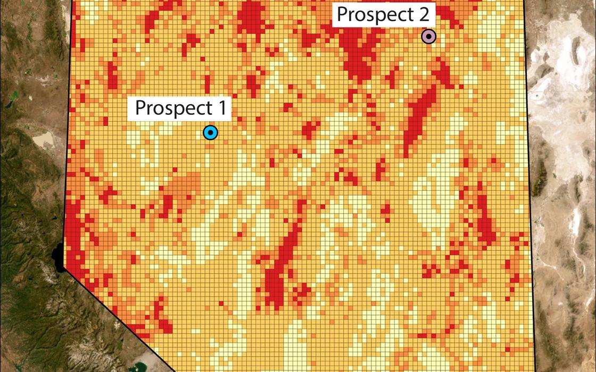

Environmental screening for mineral exploration in Nevada
A statewide suitability model that scores 11,341 ten-square-mile hex cells on hydrology, groundwater stress, and 40+ species and habitat layers, then sorts each into one of four risk zones. I led the GIS work and wrote the ArcPy scripts behind the joins, reclassification, and species weighting.